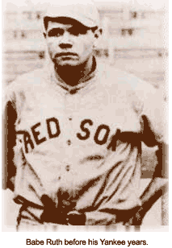
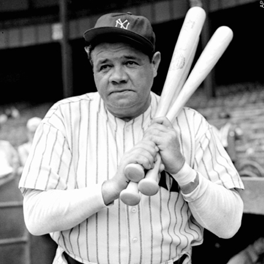

6 Facts

Fact #1: Ruth was still living at St. Mary’s when he signed with the Baltimore Orioles of the International League in Feb. 1914. He would be in the major leagues less than five months later.
Fact #2: Babe started out as a great left handed pitcher; however, he later on became one of the worlds greatest hitters (position: outfield)

Fact #3: Babe was one of eight children, though only 1 of 2 that survived infancy.
Fact #4: Babe was introduced to baseball through his father monk in a Catholic Orphanage.
Fact #5: Babe hit 714 home runs, which stood as the record until 1974.
Fact #6: Babe’s mother died when he was just 12, leaving him with his father and very little money.